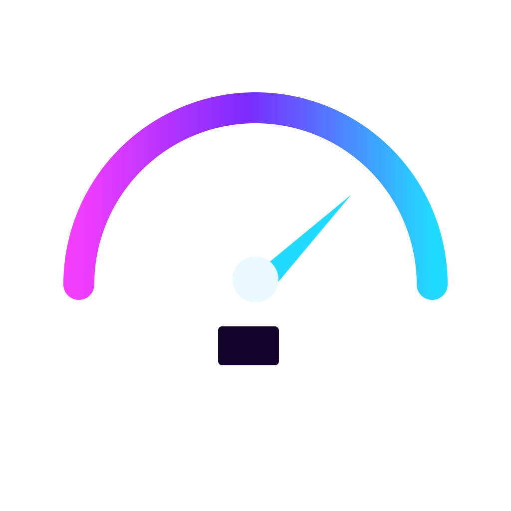

Le plein, l’esprit tranquille.
Politique de confidentialité
Cette page décrit les données utilisées par l’application iOS La Jauge, leur finalité et les contrôles disponibles. La Jauge est éditée par Solgys Apps. Pour toute question liée à vos données, vous pouvez écrire à solgys.apps@gmail.com.
Données conservées sur votre iPhone
La Jauge peut conserver localement vos favoris, trajets enregistrés, historique de recherche et de consultation, préférences de carburant, rayon et tri, paramètres de véhicule, règles d’alertes ainsi qu’un cache des zones de prix récemment consultées.
L’historique est limité aux 60 derniers éléments et le cache de prix à 8 zones. Les favoris et alertes restent jusqu’à leur suppression. Les trois favoris ajoutés le plus récemment peuvent être partagés avec le widget La Jauge sur le même appareil via l’App Group de l’application.
Localisation et recherches
La localisation est facultative. Lorsqu’elle est autorisée, elle sert à rechercher des stations autour de vous. Vous pouvez utiliser La Jauge sans GPS en recherchant une ville, un code postal ou une adresse.
Pour obtenir les prix officiels, La Jauge envoie au portail public data.economie.gouv.fr le centre géographique de la zone recherchée. Lorsque vous publiez une observation communautaire, votre position récente peut être vérifiée localement pour confirmer que vous êtes proche de la station ; elle n’est pas ajoutée à la contribution publiée.
La Jauge ne demande pas d’accès permanent à votre position et ne suit pas vos déplacements en arrière-plan.
Communauté et iCloud
La consultation de la communauté est distincte des prix officiels. Si vous choisissez de publier une observation, le service CloudKit d’Apple utilise votre compte iCloud pour authentifier l’écriture.
Une contribution peut contenir l’identifiant de la station, le carburant concerné, le type d’observation, sa valeur et les métadonnées de création fournies par CloudKit. Un identifiant pseudonyme de contributeur issu de CloudKit permet de distinguer les auteurs, gérer vos retraits et appliquer les règles de modération. La Jauge n’ajoute pas votre nom, votre adresse e-mail ni votre position GPS à la contribution publique.
Les observations cessent d’être affichées après leur durée d’utilité, mais elles ne sont pas automatiquement supprimées du cloud à cette échéance. Vous pouvez retirer vos contributions depuis Plus → Communauté.
Abonnement La Jauge+
Les achats et abonnements sont gérés par Apple via StoreKit et votre compte Apple. La Jauge reçoit l’état nécessaire pour déterminer si les fonctions La Jauge+ sont actives, mais ne reçoit pas vos coordonnées bancaires.
Supprimer l’application ou ses données locales n’annule pas un abonnement. La gestion et l’annulation d’un abonnement s’effectuent avec les outils Apple.
Publicité dans la version gratuite
La version gratuite peut afficher jusqu’à trois encarts publicitaires natifs fournis par Google AdMob : deux dans la liste de comparaison des stations et un dans la fiche d’une station. La Jauge utilise Google User Messaging Platform (UMP) pour recueillir les choix de confidentialité applicables avant de demander une publicité.
Lorsque vous consentez à la personnalisation et autorisez le suivi via App Tracking Transparency d’Apple, Google peut utiliser l’identifiant publicitaire de l’appareil (IDFA) et d’autres données autorisées pour sélectionner des annonces plus pertinentes et mesurer leur efficacité. Si vous refusez le suivi, La Jauge continue de fonctionner et les demandes publicitaires sont effectuées sans IDFA, dans le mode permis par vos choix UMP.
La Jauge ne transmet pas volontairement à AdMob vos favoris, vos trajets enregistrés ni vos coordonnées GPS. Google peut néanmoins traiter des informations nécessaires au fonctionnement publicitaire, par exemple l’adresse IP, des informations sur l’appareil, les interactions publicitaires et des diagnostics, conformément à ses propres règles et aux choix de consentement applicables. Vous pouvez modifier les choix UMP depuis l’app lorsque Google exige ce point d’entrée ; le réglage Suivi d’iOS se gère dans Réglages.
La Jauge ne demande pas l’autorisation App Tracking Transparency pour ce fonctionnement publicitaire.
Services externes
- DGCCRF / data.economie.gouv.fr : prix, ruptures, horaires et services déclarés des stations.
- Apple Plans / MapKit : carte, recherche de lieux et itinéraires.
- Apple CloudKit : contributions communautaires lorsque vous participez.
- Apple StoreKit : achat, restauration et vérification de La Jauge+.
- Google AdMob / UMP : publicité et choix de confidentialité dans la version gratuite lorsque ce service est activé.
Vos contrôles
Dans Plus → Données et confidentialité, vous pouvez effacer l’historique ou supprimer les données et préférences locales de La Jauge. Cette suppression n’efface pas les contributions déjà publiées dans CloudKit et ne modifie pas les autorisations accordées dans Réglages iOS.
Les contributions se gèrent dans Plus → Communauté. Les autorisations de localisation et de notifications se gèrent dans les réglages de l’iPhone. Lorsque Google l’exige, les choix publicitaires peuvent être rouverts depuis l’application.
La Jauge ne vend pas vos favoris, vos trajets ou votre historique de recherche. Les traitements réalisés par Apple, Google et le portail public relèvent aussi de leurs propres politiques et conditions de service.